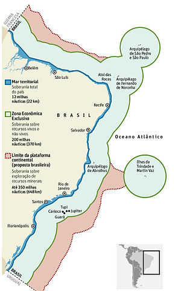

Fatos sobre a Stomatopoda
Descrição
Stomatopoda (ou estomatópode), chamados popularmente de tamarutacas ou de lacraias-do-mar no Brasil, é uma ordem de crustáceos marinhos da subclasse Hoplocarida, que agrupa cerca de 400 espécies, seu nome científico é Odontodactylus scyllarus.
Curiosidades
Nome Popular

Também conhecidas como esquilas ou lagosta-boxeadora, espalhadas pelas costas dos mares tropicais e subtropicais. Além das patas, elas apresentam uma silhueta característica, devido ao grande comprimento aparentemente de seu abdómen.
Comportamento

São animais que apresentam comportamentos sociais muito variados, desde ameaças visuais contra predadores até comportamentos de côrte.
Aonde encontrar
Estomatópodes podem ser encontrados em quase todo o litoral brasileiro, mas não são animais fáceis de se observar pelos seus hábitos mais furtivos.
Referências Bibliográficas
- https://pt.wikipedia.org/wiki/Stomatopoda
- https://repositorio.ufpb.br/jspui/handle/tede/4113?locale=pt_BR
- https://pt.wikipedia.org/wiki/Litoral_do_Brasil